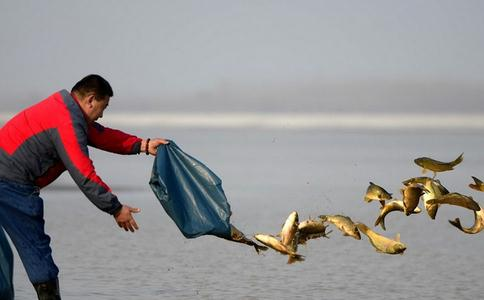

最初
不过放生终究要继续，不久就在网上发现一种很理想的放生方式，有很多在家
在这一年多的时间里，后学差不多每个月最少汇款两次，钱不在多少，只要我尽了自己的全力，开始的时候想的更多的是，我放生可以得到很大的福报。放的久了念头渐渐变了，想的更多的是，我只要多汇些钱，就能够救下更多的生命。到现在每当我看到居士们发在网上的照片，放掉的狐狸，貉子，鸟，鱼，龟……看到它们高兴的跑向森林深处，我的心里真是好感动好快活。
所有善法中以放生得利益最快，后学从中获得的大利益实在是一言难尽，05年秋天我得了一种叫筋膜炎的病，腿很痛，医生说这是劳伤，干活累的，除非以后不干活才能慢慢养好，要不然就严重了，还要打封闭，两寸长的药水全部打进膝盖里，打了两个月。我是家里的主要劳动力，我不干活难道都要年迈的父亲来干？当时的确很着急，开始放生不久，神奇的事情发生了，没有打针吃药，我在春天工作最累最繁忙的时候病好了，实在很不可思议。我还有低血压的毛病，一饿就头晕眼花，这个病也在不知不觉中好了，这些都是放生带给我的大利益。
但是，放生令我受益最大的不是医好了病，而是通过放生令我舍弃了心中的种种贪念，物欲减小了，自然对身边利益的得失看的淡了，种种烦恼几乎找不到，任何事情都不在计较，拿得起放的下，这种神奇的感觉对我真是太重要了，切实的体会到了布施可以扫除人心中的贪执！
07年，后学放生一年，年底粗略的算了一下，我的年收入翻了一倍，达到了近20万，这个数字在我们这个小县城里，算是相当不错的，想想以前，父亲整整辛苦一年，算上地里一年的麦子和
我是修
放生这一年多里，感觉进步非常快，明白了惜福的道理，去年冬天去个朋友家做客，酒足饭饱之后，朋友说要去洗澡，后学生平第一次在大城市的洗浴城里洗澡，里面的装潢可谓极尽奢华，四个人洗了个澡竟然花去四百多块钱，虽然不是我请客，但是出来以后我暗暗对自己说，以后再也不到这种地方了，洗个澡用那么大一池水，还好几百块钱，实在太浪费太奢侈了。记得一篇文章讲述
老婆说想要数码照相机，还想要钻石戒指，总是被我敷衍过去，老婆说我更吝啬了，朋友也说我不如以前大方了，以前经常请他们喝酒吃肉的，我的想法很简单，我的血汗钱应该干更有意义的事，而不是造恶业。记的在一本书上看过，好象是基督教的论点，说对自己吝啬对别人也吝啬的人是守财奴，对自己慷慨对别人吝啬的人是利己主义者，对自己吝啬对别人慷慨的人则是圣徒。
过了这个春节我想把原来的放生方式改进一下，借鉴一位师兄的放生方法，准备一个储钱罐，从自己每天挣的钱中拿出一部分放进去，每天存，多了就汇出去，这样就可以很自然的将布施养成一种习惯，这样进步一定更快！
放生到现在我最大的遗憾是不敢把放生的事实告诉家里人，我怕他们说我疯了，放生全在自己发心，别人很难劝导的。 如果哪位师兄发心学放生的话，那么后学敢说，这位师兄的
上学时候学过一个词，叫升华，指冰从固体直接变为气态，从
原来的我，什么都不会全靠爹娘养活，我们这里有句俗话---宁养贼子，不养痴儿。痴儿不是白痴，是指那种什么都不会，只能靠爹娘老子养活的笨蛋儿子，我以前就是这种人，一条标准的寄生虫，不过也就在这两三年的时间里，我成为家里的顶梁柱，用心的费力的全由我一人来打点，并且做的比父亲还要好，现在的我充满了自信，还成了父母眼里的
学佛放生后，清楚的感觉到自己的性格命运都发生了巨大的改变，只要我们用一颗至诚的心去改过，修善，一年之力的确可以敌他人十年之功！